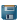

|
|
Activity Cliffs Panel |
In this panel, the differences in a selected property are plotted against differences in structure evaluated using fingerprints. The results are also listed in a table.
To open the Activity Cliffs panel:
Click Activity Cliffs in the R-Group Viewer panel.
Choose a property for the activity cliff analysis.
These options allow you to filter the pairs of structures according to the number of positions in which variation of the R group occurs.
One R-group—Show pairs of structures in which there is a change in only one of the R groups. This is useful for analyzing the activity variation with structure at a given position. R groups at the other positions can differ between pairs, but not within a given pair.
Up to 2 R-groups—Show pairs of structures in which there is a change in one or two of the R groups. This is useful for analyzing the activity variation with structure when groups are exchanged between two sites, possibly resulting in different binding modes.
Select an option for the fingerprints to use when comparing structures.
Ignore atom-type differences—Evaluate the fingerprint differences using radial fingerprints with no atom or bond type information, and exclude hydrogens. This choice means that the variations in structure that are considered are purely in the connectivity (the "skeleton").
Observe atom-type differences—Evaluate the fingerprint differences using radial fingerprints, with atoms distinguished by element, and bonds distinguished by bond order and aromaticity. This choice produces larger variations in fingerprint differences, and distinguishes between similar structures that might differ only in the atom type, e.g. substitition of Cl for F, or NH2 for OH.
Use custom fingerprints—Choose the fingerprint type and precision, the atom typing scheme, and the similarity metric to use, from those available in Canvas. This choice allows the greatest flexibility in setting up the analysis. Opens the Activity Cliffs Options dialog box, in which you can make the choices described.
Click this button to run the activity cliff analysis. The progress of the analysis is displayed in a bar at the bottom left of the panel. When the analysis finishes, the description of the fingerprint and atom typing scheme is displayed in the Last Run Settings section.
This section provides information on the settings made for the most recent analysis.
This section describes the color scheme used to color the activity plot and the Deviation column in the table.
The plot displays the difference in property for pairs of structures as a function of the fingerprint difference. The points in the plot are colored by the Mahalanobis distance of the points from their centroid. Points within two standard deviations of the centroid are colored purple. Points outside this range with a larger property difference than average are colored red-purple if they lie within 4 standard deviations of the centroid, and red if they are outside 4 standard deviations. Likewise, points outside this range with a smaller property difference than the average are colored blue-purple if they lie within 4 standard deviations of the centroid, and blue if they are outside 4 standard deviations.
You can select points in the plot by clicking on them. The points are marked with an X, and the corresponding rows are selected in the table. To add points to the selection, use shift-click; to change the selection of one point without affecting the others, use control-click.
The plot toolbar contains a standard set of tools for adjusting the view of the plot, stepping through different views, and saving a plot image.
 |
Reset Reset the plot to the original pan and zoom settings. |
 |
Previous Display the previous view of the plot in the view history. |
 |
Next Display the next view of the plot in the view history. |
 |
Pan/zoom Pan the plot with the left mouse button, zoom with the right button. |
 |
Zoom to rectangle Drag out a rectangle on the plot to zoom in to that rectangle. |
 |
Configure subplots Configure the margins and spacing of each plot in the panel. |
|  | Save image Save an image of the plot to file. Opens a file selector in which you can browse to a location, select the image format, and name the image. |
This table shows the pairs of structures and the relevant properties for each of the structures. You can select rows in the table, and the corresponding points are marked in the plot. You can sort the rows by clicking in any of the column headings.
| Deviation | Signed Mahalanobis distance from the centroid of the points in the plot. The sign indicates the relation of the activity difference to the activity difference of the centroid. |
| Structure 1 Structure 2 |
2D structures. Pausing the pointer over the cell displays an enlarged image of the structure in a tooltip. The value of the property for the structure is shown at the top left. |
| Δ Fingerprint | Fingerprint distance between the two structures. |
| |Δ Property| | Absolute value of the difference in properties. |
| Substitutions | Number of positions at which the two structures differ. The range of values depends on the choice made for showing the position variation. |
These two buttons allow you to export the contents of the table.
These options can be used to limit the display of structures in the table.
Show all structures—Show all the rows in the table.
Show selected structures—Show only the table rows that are selected, and hide the unselected rows.
Clear the selection of rows in the table.
|